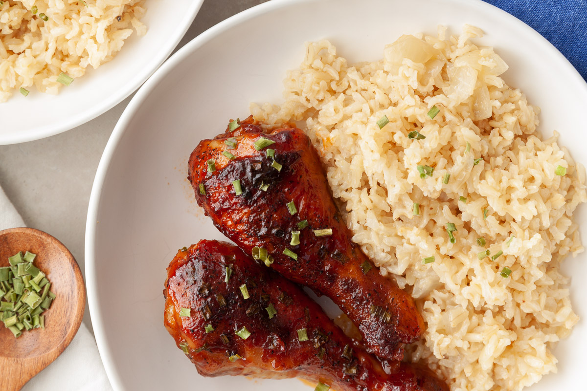

Home
Sticky Chicken

Description
This is a delcious homestyle meal sure to please your entire family.
Cooked in a sweet sauce until the chicken is falling off the bone, even the pickiest eater will love this.
Ingredients
- 1 cup ketchup
- 1 cup brown sugar
- 1 tablespoon soy sauce
- 1 tablespoon yellow mustard
- 2 tablespoons apple cider vinegar
- 8 chicken drumsticks
Steps
- Combine all ingredients except the chicken in a bowl. Stir until ingredients mixed together smoothly.
- Pour a small amount of sauce in the bottom of a large frying pan. Put drumsticks on top of sauce and then
pour sauce over them, reserving a small amount.
- Add a half cup of water, cover, and cook on low for two hours, stirring occasionally.
- Pour remaining sauce over chicken in the last fifteen minutes of cooking.
- Uncover and let sit for five minutes before serving.
- Enjoy!